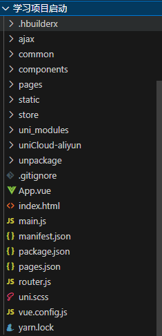
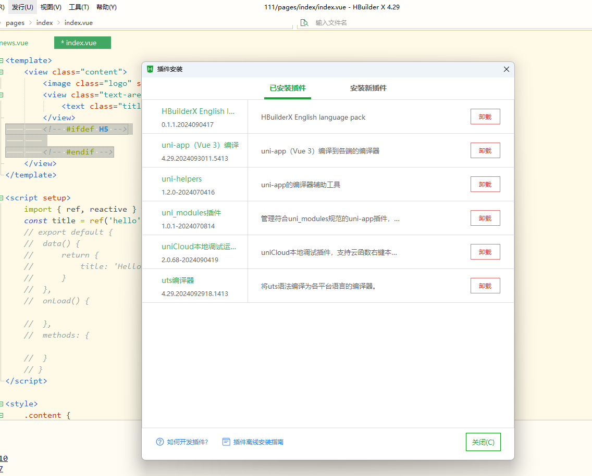

基于 vue.js
可以打包成微信小程序，h5(web app)，安卓，ios
uni-app 和 vue 的关系
- 使用 vue.js 开发
- 在发布到 H5 时，支持所有 vue 语法
- 发布到 App 和小程序时，实现部分 Vue 语法
uni-app 和小程序有什么关系
- 组件标签靠近小程序规范
- 接口能力（JS API）靠近微信小程序开发
- 完整的小程序生命周期
微信小程序使用
开发文档：https://developers.weixin.qq.com/miniprogram/dev/framework/
微信公众平台：https://mp.weixin.qq.com/
下载地址：https://developers.weixin.qq.com/miniprogram/dev/devtools/download.html
1.注册小程序
2.下载专门软件
uni-app 多端使用
可以下载以后，打开微信开发工具调试，打开浏览器调试，打开 ios,安卓进行调试
官网：https://uniapp.dcloud.net.cn/component/
小程序运行需要填写 appId
目录结构

项目名称
----【pages】 内部存放所有页面
----【static】 存放所有静态资源，比如图片，字体图标
----【unpackage】存放所有打包生成后的文件
----app.vue 应用配置，用来配置App全局样式以及监听 应用生命周期
----main.js Vue初始化入口文件
----mainfast.json 配置应用名称、appid、logo、版本等打包信息
----pages.json 配置页面路由、导航条、选项卡等页面类信息
----uni.scss 用途是为了方便整体控制应用的风格。比如按钮颜色、边框风格，uni.scss文件里预置了一批scss变量预置。
组件
1.内置组件(直接使用)
2.插件市场下载使用（下载后会放入 uni-modules）
3.新建 components 文件夹，自定义组件
css 适配
采用 rpx 的单位来进行开发
设计稿基准：750rpx（这个参数可以在 hbuildx 中设置）
rpx 是小程序开发中为了解决不同设备屏幕适配问题而引入的一种单位。在 uni-app 中同样适用，它可以根据设备屏幕的宽度自动进行换算。例如，在 750rpx 的设计稿中，1rpx 代表在设备屏幕宽度为 750px 时的 1 个像素。如果设备屏幕宽度为 375px，那么 1rpx 就等于 0.5px。
样式深层影响（影响组件内的样式）
/deep/ .xxx
可以在插件市场安装 sass，这样就可以使用 sass 的语法
scoped
在小程序中 style 样式采用 scoped 是无效的，尽量不要这样去使用
api
npm
可以正常的下载 npm 包去使用
插件安装
如果想用一些 sass 或者 vue3 等，需要在这里安装插件，其实有点像(node_module)

uni-load-more 加载更多
uni-forms 表单
uni-icons 图标
uni-easyinput
uni-simple-router 模拟原生路由守卫
请求
uni.request
注意：小程序里面不能使用 fetch，可以使用第三方库request-miniprogram
上传下载
uni.uploadFile 上传文件
uni.downloadFile 下载文件
图片处理
uni.chooseImage 从相册选择图片，或者拍照
uni.previewImage 预览图片
uni.getImageInfo 获取图片信息
数据缓存
uni.getStorage 异步获取本地数据缓存
uni.getStorageSync 同步获取本地数据缓存
uni.setStorage 异步设置本地数据缓存
uni.setStorageSync 同步设置本地数据缓存
uni.removeStorage 异步删除本地数据缓存
uni.reoveStorageSync 同步删除本地数据缓存
交互反馈
uni.showToast 显示提示框
uni.showLoading 显示加载提示框
uni.hideToast 隐藏提示框
uni.hideLoading 隐藏加载提示框
uni.showModal 显示模态框
uni.showActionSheet 显示菜单列表
路由
uni.navigateTo 保留当前页面，跳转到应用内某个界面，使用 uni.navigateBack 返回原页面
uni.redirectTo 关闭当前界面，跳转到应用内的某个界面
uni.reLaunch 关闭所有界面，打开应用内的某个界面
uni.switchTab 跳转到 tab Bar 页面
tabbar
在 page.json 配置，即可在小程序下面生成切换按钮
"tabBar": {
"color": "#666",
"selectedColor": "#f25037",
"backgroundColor": "#fff",
"list": [ // 显示页面信息,包含了tabbar需要跳转的所有的页面信息
{
"pagePath": "pages/index/index", // 页面路径
"iconPath": "static/img/home.png", // 默认图片
"selectedIconPath": "static/img/home-active.png", // 选中图片
"text": "首页" // 文字描述信息
},
{
"pagePath": "pages/follow/follow",
"iconPath": "static/img/follow.png",
"selectedIconPath": "static/img/follow-active.png",
"text": "关注"
},
{
"pagePath": "pages/self/self",
"iconPath": "static/img/my.png",
"selectedIconPath": "static/img/my-active.png",
"text": "我的"
}
]
}
多端 if
只在 h5 中显示
<!-- #ifdef H5 -->
<!-- #endif -->
除了 h5
<!-- #ifndef H5 -->
<!-- #endif -->
手机状态栏高度获取
// 获取手机系统信息
const info = uni.getSystemInfoSync()
// 设置状态栏高度
this.statusBarHeight = info.statusBarHeight
小程序胶囊信息获取
let menuButtonInfo = uni.getMenuButtonBoundingClientRect()
常用组件
scroll-view 滚动组件（可以加 scrolltolower 事件判断是否滚动到底部）
uni-load-more 加载更多的文字
uni-popup 弹出层
manifest.json
这里面可以指定 index.html 模板
可以设置 appId
检查更新
uni.getSystemInfo({
success: (res) => {
if (res.platform == "android") {
plus.runtime.getProperty(plus.runtime.appid, wgtinfo => {
this.currentVersion = wgitinfo;
this._checkVersion();
})
}
}
})
// 获取最新版本app下载
_getNewVersion () {
uni.showLoading({ title: '下载中，请稍后' });
var dtask = plus.downloader.createDownload(this.downLoadLinkUrl, {}, function (d, status) {
// 下载完成
uni.hideLoading({})
if (status == 200) {
plus.runtime.install(plus.io.convertLocalFileSystemURL(d.filename), {}, {}, function (error) {
uni.showToast({
title: '安装失败',
duration: 1500,
icon: 'none'
});
})
} else {
uni.showToast({
title: '更新失败',
duration: 1500,
icon: 'none'
});
}
});
dtask.start();
},
uniapp 生命周期
应用生命周期
- onLaunch 初始化完成时触发（全局 🈯️ 触发一次）
- onShow uni-app 启动，或从后台进入前台显示
- onHide 当 uni-app 应用从前台进入后台
只能在 App.vue 里面进行监听，在其他界面监听无效
页面生命周期
- onLoad 监听页面加载（可获取上个界面传递的参数）
- onShow 监听页面显示，每次出现在屏幕上都进行触发
- onReady 监听页面初次渲染完成
- onHide 监听页面隐藏
- onUnload 监听页面卸载
- onReachBottom 页面滚动到底部事件
组件生命周期
- beofreCreate
- created
- boforeMount
- mounted
- boforeDestroy
- destroyed
uni-cloud
提供云函数，云数据库，云存储
用来云搭建后端的(利用阿里云)
要关联阿里云服务空间
其实就是利用阿里云给你开一个云服务器，可以运行 node,这样接口，数据库都可以利用阿里云来运行（说白了就是给你一个后端）